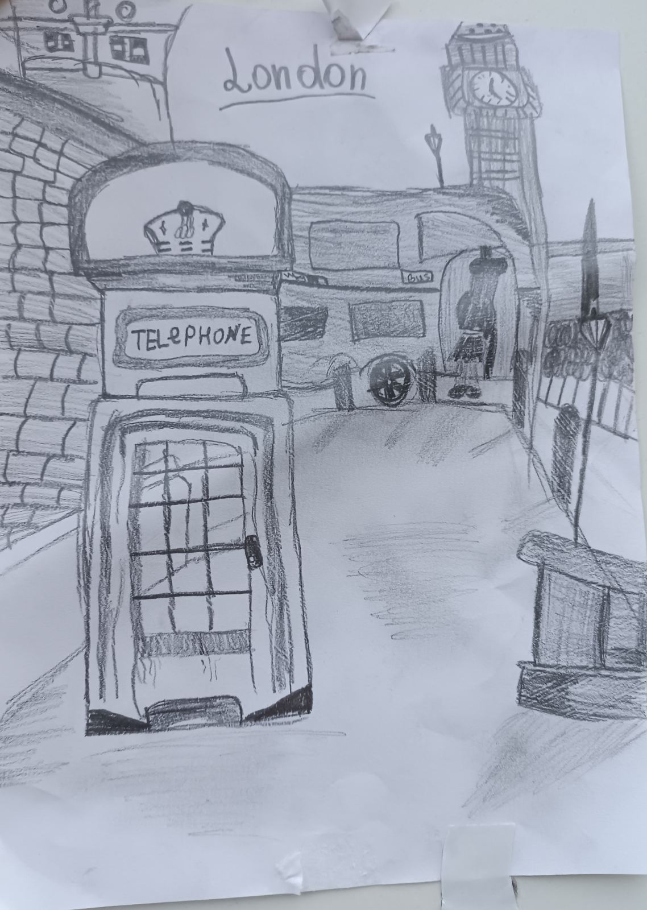
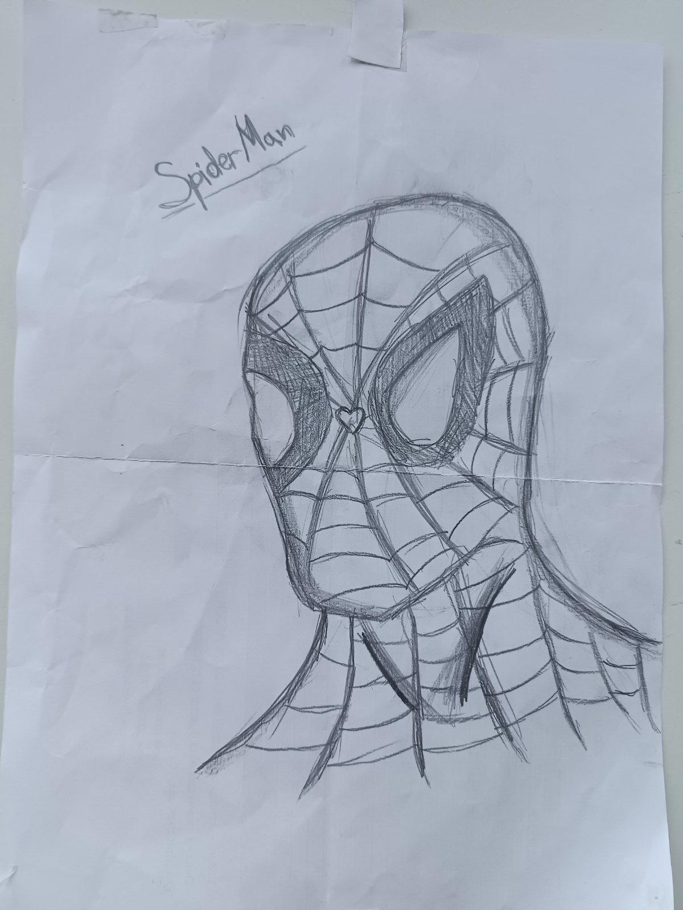
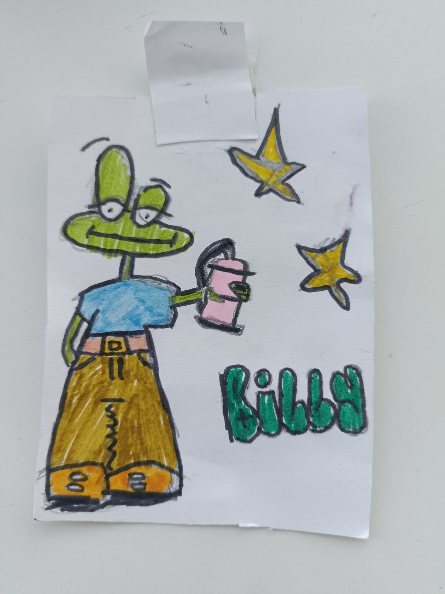

Привіт, я Вероніка! Мені 10 років, і я старанна дівчинка. У школі вчусь добре, завжди стараюся допомагати однокласникам і завжди готова до нових викликів. Я люблю креативність і маю багато хобі, але найбільше я ціную малювання. Воно для мене не просто хобі, а справжній світ казки, де я можу створювати свої власні історії та світи.
Малювання - це моє улюблене хобі. Я люблю творити світлинки, які розповідають різні історії. Мої образи можуть бути веселими та казковими або поважними і серйозними. Кожен раз, коли беру в руки олівець, я відчуваю, що створюю щось особливе. Я вчусь сама, експериментуючи з різними техніками та стилями. Мої малюнки - це моя історія, моя уява перетворюється на красиві образи на папері. Я відчуваю велику радість, вкладаючи свої емоції та думки у кожну мить творчості. Але є одна проблема, на жаль, я не можу розказати всім про свої художні навички. Тому мета цього сайту - поділитися цим світом краси та фантазії з іншими людьми. Це надзвичайно мені допоможе для того, щоб вони побачили мій талант. Я вірю, що мої малюнки можуть донести радість та натхнення іншим людям. Це не лише моє хобі, але й спосіб виразити себе та подарувати трошки магії тим, хто бачить мої творіння. Ось декілька моїх малюнків:
  Буду рада новим друзям! Долучайтесь до мене на Instagram, де я ділюся своїми творіннями та веселими моментами життя!